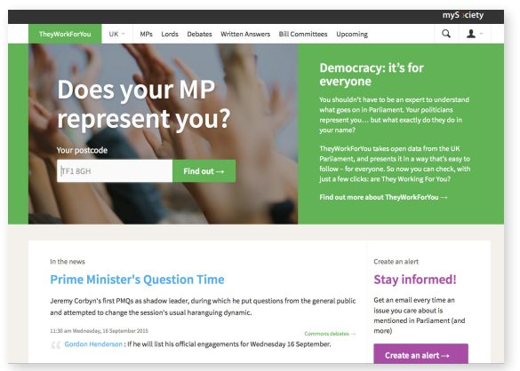
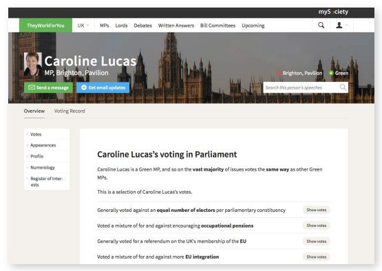
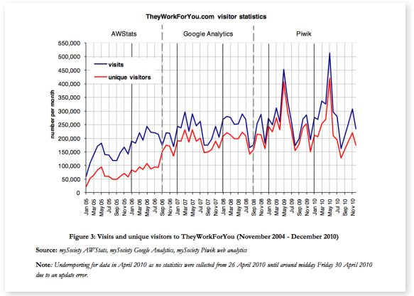

سایت TheyWorkForYou.com یک وب سایت نظارت بر مجلس است که بیش از ۱۰ سال است که در بریتانیا فعالیت میکند. این قانون یک نسخه قابلدسترس و قابل جستجو از سوابق رسمی دادرسی پارلمان بریتانیا و همچنین مجمع واگذار شده ایرلند شمالی را فراهم میکند. همچنین تجزیه و تحلیل سوابق رایگیری نمایندگان منتخب و غیر منتخب را فراهم میکند. نظریه گردش داده اصلاحات داده باز در بریتانیا را چندین سال پیشآغاز میکند و در این گزارش به عنوان پنجرهای به تاثیرات بلند مدت خروجیها براساس داده عمومی گنجانده شدهاست. به نظر می رسد یکی از تأثیرات درازمدت TheyWorkForYou تشویق نمایندگان مجلس به رای دادن کمتر با حزب خود و بیشتر به نفع افرادی است که نماینده آنها هستند. همچنین مهم است که صرفهجویی بالقوه پولی در زمان تحویل به کاربران سایت در نظر گرفته شود - که بسیاری از آنها گروههای جامعه مدنی و روزنامه نگاران هستند. این ممکن است در هر سال میلیون ها پوند باشد، اگر چه محدودیتهای روششناختی به این معنی است که ممکن است قرار دادن یک رقم دقیق در مورد آنها همیشه غیر ممکن باشد. با ایجاد یک درک مشترک بین تنظیم کنندگان و خیریهها، و ایجاد محصولات اطلاعاتی برای اهدا کنندگان، تامین کنندگان سرمایه و اهدا کنندگان کمک مالی.
- بزرگترین تاثیر آنها ممکن است بر روی خود اعضای پارلمان باشد. mySociety مشکوک است، و برخی دادهها تأیید میکنند که نمایندگان مجلس در پاسخ به ابزارهای نظارت و تجزیه و تحلیل رای TheyWorkForYou، روش کار خود را تغییر دادهاند.
- همان طور که سیاست داده باز TFL باعث صرفهجویی در زمان مسافران میشود، تارنمای TheyWorkForYou.com در زمان کاربران خود صرفهجویی میکند - که بسیاری از آنها گروههای جامعه مدنی و روزنامه نگاران هستند. علاوه بر انتظار وب سایتهایی با یک ماموریت سیاسی / اجتماعی برای دستیابی به اثرات سیاسی / اجتماعی مثبت بلند مدت توسط خودشان، ما همچنین میتوانیم از آنها انتظار داشته باشیم که زمان را برای افرادی که تلاش میکنند به این اثرات از طریق روشهای دیگر دست یابند، صرفهجویی کنند.
- اگرچه ممکن است در مواجهه با چیزهایی مانند کدهای پستی هیچ ارتباطی با نظارت پارلمانی نداشته باشد، در حقیقت دادههای پس از کد یکی از مجموعه دادههای کلیدی هستند که TheyWorkForYou را هدایت میکنند. در اوایل تاریخ این وب سایت، mySociety از طریق مجوز بررسی نظم، به دادههای پس از کد دسترسی داشت. در حال حاضر از دادههای باز مربوط به پکدهای ارائهشده توسط سازمان نقشهبرداری و دفتر آمار ملی استفاده میکند. اما عدم دسترسی به فایل نشانی پست کد رویال میل (صفحه ۱۲ را ببینید) به این معنی است که نمیتواند اطلاعات دقیق را به همه کاربرانش در مورد اینکه نماینده منتخب آنها چه کسی است، ارائه دهد.
- mySociety مشکوک است، و برخی دادهها تأیید میکنند که نمایندگان مجلس در پاسخ به ابزارهای نظارت و تجزیه و تحلیل رای TheyWorkForYou، روش کار خود را تغییر دادهاند. پایداری بلند مدت پروژههایی مانند TheyWorkForYou.com توسط این مورد مورد سوال قرار گرفتهاست.
مورد عددی
میانگین دیدارهای ماهانه از سایت TheyWorkForYou.com
میانگین دیدارهای ماهانه افراد شاغل در مجلس نمایندگان از سایت TheyWorkForYou.com
بخشی از کاربران مورد بررسی که میگویند از آن به عنوان بخشی از کار خود استفاده میکنند
بخشی از کاربرانی که مورد بررسی قرار گرفتهاند میگویند که برای اولین بار در حال کسب اطلاعات در مورد نماینده منتخب خود هستند.
پیشینه
سایت TheyWorkForYou.com اطلاعات قابلدسترسی و قابل جستجو را در مورد اعضا و اقدامات پارلمان، نهاد اصلی قانونگذاری بریتانیا و همچنین مجلس ایرلند شمالی فراهم میکند. نسخههای قبلی این وب سایت همچنین اطلاعاتی در مورد اعضا و اقدامات پارلمان اسکاتلند ارائه دادند. سایت TheyWorkForYou.com طیف وسیعی از اطلاعات، از جمله سوابق رای دادن اعضا، سخنرانیها و منافع ثبتشده را فراهم میکند. صفحه اول وب سایت کاربران را دعوت میکند تا به این سوال پاسخ دهند که «آیا نماینده پارلمان شما نماینده شما است؟» با پر کردن کد پستی خود برای دسترسی به تجزیه و تحلیل نحوه رأی دادن نمایندگان حوزه انتخابیه خود و مشاهده آخرین حضور آنها در پارلمان (شکل ۱ و شکل ۲ را ببینید)


در ژوئن ۲۰۰۴، سایت TheyWorkForYou.com توسط گروهی از داوطلبان راهاندازی شد «که فکر میکردند برای مردم بسیار آسان است که بر نمایندگان منتخب خود و اعضای منتخب پارلمان نظارت داشته باشند، و در مورد آنچه که در پارلمان میگذرد نظر بدهند». به طور انفرادی، داوطلبان اصلی در حال حاضر تعدادی وب سایت با ذهنیت مدنی ایجاد کرده بودند. از سال ۲۰۰۶، TheyWorkForYou.com توسط mySociety، یک شرکت اجتماعی غیر انتفاعی مستقر در بریتانیا اداره میشود که پلتفرم های وب را توسعه میدهد که «به مردم قدرت تغییر چیزها را میدهد».
اطلاعات منتشر شده در وب سایت TheyWorkForYou.com از Hansard، گزارش رسمی اقدامات پارلمانی، استخراج شد. به رغم این حقیقت که این فعالیت نقض حق کپی را تشکیل میدهد، TheyWorkForYou.com آغاز به کار کرد: داوطلبان حق تکثیر Hansard را که تحت پوشش حق کپی سلطنتی بود، نداشتند. بعدا، و در همکاری با برخی از داوطلبان theyWorkForu.com، مجوزهای استفاده از کلیک در دفتر اطلاعات بخش دولتی (OPSI)توسعه داده شد که در میان سایر موارد، فعالیت سایت را قانونی اعلام کرد.
دادهها
از منابع اطلاعاتی متعددی استفاده میکند. هنگامی که در مورد مهمترین مجموعه دادههای محرک این پلتفرم سوال شد، متیو سامرویل، توسعه دهنده اصلی این سایت، مجموعه دادههای زیر را شناسایی میکند.
- پست کد و دادههای مرزی حوزه انتخاباتی، برای ترسیم نقشه مردم به نمایندگان خود
- مردم، برای هر یک از مجالس قانون گذاری
- دادههای انتقال، برای هر یک از قانونگذاران پوشش داده شد، و انواع مختلف داده در آن (به عنوان مثال، بحثهای واقعی، پاسخهای نوشته شده، کسبوکار آینده، کمیتهها و غیره).
او ادامه میدهد:
تحلیلهای رایگیری مهم هستند، اما اساسا از دادههای رونوشتی که شامل اطلاعات رایگیری هستند، مشتق شدهاند. من احتمالا مجموعه داده خودمان را از هر کسی که برای هشدارهای ایمیل ثبتنام کردهاست اضافه میکنم، چون ایمیلهای روزانه که براساس اطلاعات جمعآوریشده از دیگر مجموعه دادهها ارسال میکنیم احتمالا به قدرت رساندن سایت در یک مسیر کمک میکند.
در طول بیش از ۱۰ سال فعالیت در سایت TheyWorkForYou.com، سومرویل تغییراتی را در نحوه ارائه این دادهها مشاهده کردهاست. از نظر کدهای پستی و مرزهای حوزه انتخابیه، از سال ۲۰۱۰، theyWorkForyou.com از محصول داده باز CodePoint بررسی مکانی برای مطابقت کدهای پستی مردم با حوزههای انتخابیه خود در بریتانیای کبیر و محصول کد پستی اداره آمار ملی برای انجام همان عملکرد برای کاربرانی که در ایرلند شمالی زندگی میکنند، استفاده کردهاست. منبع دوم با تعریف باز مطابقت ندارد، زیرا تنها برای استفاده غیر تجاری فراهم شدهاست. قبل از این که این محصولات در دسترس قرار گیرند، mySociety از طریق مجوز سازمان نقشهبرداری به کدهای پستی دسترسی داشت.
داده افراد در طول سالها از منابع داده مختلف ساخته شدهاست و mySociety آن را تحت پروانه گیرنده باز در دسترس قرار میدهد.
داده متن برای مجلس ایرلند شمالی از طریق درگاه داده باز AIMS مجلس ایرلند شمالی که در سال ۲۰۱۲ توسط مجلس ایرلند شمالی راهاندازی شد، قابلدسترسی است. از سال ۲۰۱۴، تیم توسعه وب سایت رسمی پارلمان بریتانیا به آدرس MP، دادههای خود را از طریق API در دسترس قرار دادهاست. با این وجود، TheyWorkForYou.com هنوز هم دادههای Hansard را هر روز صبح برای پر کردن این سایت با آخرین اقدامات پارلمان بریتانیا، به جای دسترسی به دادهها از طریق API، مرور میکند.
تام استاینبرگ، مدیر عامل اجتماعی، توضیح میدهد که ادامه به پاک کردن وب سایتهای رسمی به جای استفاده از API های داده باز جدید به طور عمده به اولویتبندی منابع در mySociety بستگی دارد:
اگر ما از برخی از آنها (داده باز)استفاده نکرده باشیم، اغلب به این دلیل است که هزینه بازنویسی نرمافزار برای استفاده از آن، تنها زمانی ارزش آن را ندارد که بتوانیم کار بر روی صفحه نمایش را ادامه دهیم.
اسکراپر اصلی که رونوشت جلسات پارلمان اسکاتلند را در اختیار TheyWorkForYou.com قرار داد توسط داوطلبی به نام مارک لونگایر ساخته شد. اما در چند سال گذشته سایت اسکاتلندی TheyWorkForYou.com به روز نشده است. Somerville توضیح می دهد:
پارلمان اسکاتلند چند سال پیش سایت خود را تغییر داد و ما از آن زمان فرصت نداریم تا کاغذ روشنکن را به روز کنیم و هیچ داوطلبی برای کمک نداشته ایم، بنابراین از آن زمان به بعد به روز رسانی نشده است. فکر نکنید که آنها تا کنون هیچ نوع API ای دارند.
«فکر نمیکنم طبقات سیاسی به ایده اخبار یا اطلاعات ماندگار عادت کرده باشند.»
تام استاینبرگ، MySociety
مسیر باز شدن
سایت TheyWorkForYou.com نقش مهمی در شکلگیری سیاست بریتانیا در مورد داده باز ایفا کرد. در سال ۲۰۰۷، تام اشتاینبرگ مامور شد تا یک بررسی تاثیر گذار از فرصتهای ارائهشده توسط باز کردن اطلاعات بخش دولتی، حرکتی که او میگوید آثار به طور مستقیم به مشارکت او در سایت TheyWorkForYou.com باز میگردد، بنویسد:
با بازگشت به عصر حزب کارگر، شماره ده (یعنی دفتر نخستوزیر)مایل بود با ما به عنوان گروهی از مردم صحبت کند زیرا آنها وجود داشتند. چرا حاضر بودند با ما صحبت کنند؟ چون آنها از آن استفاده کردند، از آن برای بررسی دادههای پارلمانی خود استفاده کردند و در آن زمان نمیتوانستند از وب سایت پارلمان استفاده کنند، چون خیلی ضعیف طراحی شدهبود. و بنابراین بدون هیچ استدلالی TheyWorkForYou کلیدی برای ورود از در شماره ده بود. و به طور مستقیم منجر به قدرت بررسی اطلاعات شد.
یکی از جالبترین چیزها در مورد theyWorkForyou.com این است که دادههای پس کد مرکزی برای عملیات آن چقدر مهم هستند. مایسوسایتی بخشی از طیف صداهایی بود که از سازمان نقشهبرداری برای آزاد کردن داده خود قبل از انتشار باز CodePoint ۲۰۱۰، به خصوص داده مرزی، که در شناسایی نماینده انتخابی کاربر حیاتی است، خواسته میشد.
روشی که mySociety از دادههای کدپستی استفاده میکند، بلافاصله تجربه استفاده از TheyWorkForYou را شخصیسازی میکند و مانع دسترسی به عملکرد دموکراسی را در کشوری که تحقیقات نشان میدهد تنها ۲۲ درصد از مردم میتوانند نماینده منتخب خود را نام ببرند، کاهش میدهد. این مشاهده، سودمندی کدهای بعدی را در گستره و سیعی از برنامههای آنلاین، مورد تاکید قرار میدهد.
کاربران و برآیندها
«سامرویل» گزارش میدهد که «تی. تی. وی. کام» روزانه حدود ۳۰ هزار ایمیل برای افرادی ارسال میکند که در محدوده وسیعی از اخطارها ثبتنام کردهاند، از زمانی که نماینده مجلس آنها در پارلمان صحبت میکند تا زمانی که به کلمات خاصی اشاره شدهاست. جدیدترین تحقیق عمیق در مورد پایگاه کاربر TheyWorkForYou.com توسط Tobias Escher از موسسه اینترنت آکسفورد در سال ۲۰۱۱ منتشر شد. این گزارش نشان داد که این سایت ماهانه بین ۲۰۰، ۰۰۰ تا ۳۰۰، ۰۰۰ بازدید دریافت میکند (شکل ۳ - نقاط اوج در ماه می ۲۰۰۹ و می ۲۰۱۰ به ترتیب به دلیل رسوایی هزینههای نمایندگان پارلمان است، زمانی که بسیاری از روزنامهها لینکهای صفحات نمایندگان مجلس را در سایت TheyWorkForYou.com منتشر کردند، و انتشار یک آزمون انتخاباتی که رای دهندگان را براساس هر یک از باورهای سیاسی بیانشده آنها با نامزدهای پارلمانی مطابقت میدهد، که توسط داوطلبان در حال اجرا تا انتخابات ۲۰۱۰ توسعه داده شدهاست).
«جستجو صد برابر آسانتر از خود Hansard (صورت جلسات رسمی پارلمان انگلیسی) است. من قبل از اینکه به اینجا بیایم دو ساعت را در هانسارد گذراندم و فقط در کمتر از یک دقیقه آنچه را که می خواهم پیدا کردم.»
کاربر ناشناس
اما استثناهایی وجود دارد. یک مکالمه توییتری در سال ۲۰۱۳ بین متیو سامرویل و یک کاربر TheyWorkForYou.com یک مورد را نشان می دهد که داده ها مطابقت نداشتند: اگرچه ساکنان جاده کاربر همگی یک کد پستی به اشتراک گذاشته بودند، اما کسانی که در خانه هایی با اعداد فرد زندگی می کردند یک نماینده نماینده مجلس بودند. کسانی که در خانههایی با شماره زوج دیگری زندگی میکنند (mySociety ۲۰۱۳) (متیو سامرویل با نام @dracos توییت میکند). دسترسی به فایل آدرس کدپستی رویال میل (به صفحه ۱۲ مراجعه کنید) به TheyWorkForYou.com این امکان را میدهد تا به همه کاربران خود اطلاعات دقیقی درباره اینکه چه کسی نماینده آنهاست در پارلمان بریتانیا است را ارائه دهد.

برگرفته از (Escher, ۲۰۱۱). کپی رایت Tobias Escher. تحت شرایط مجوز CC-BY-NC ۲.۰ تکثیر شده است.
اسچر گزارش میدهد که حدود نیمی از مخاطبان سایت TheyWorkForYou.com کاربران دائمی هستند، و هر ماه حدود یک یا پنج نفر از آنها استفاده میکنند. ۳۰ % پاسخ دهندگان به نظرسنجی از ۹۰۳ کاربر سایت توسعهیافته توسط اسکر میگویند که آنها از وب سایت برای کار استفاده میکنند و الگوهای استفاده متمرکز در ساعات کاری بریتانیا این موضوع را اثبات میکنند. حدود ۲ % بازدیدها از آدرسهای IP است که نشان میدهد کاربر در مجلس پارلمان کار میکند و ۲ تا ۳ % بیشتر نشان میدهد که کاربر برای دولت کار میکند. کارگران در بیبیسی ۰.۵ درصد از بازدیدها در سال ۲۰۱۰ را تشکیل میدادند.
تاثیر
تام اشتاینبرگ معتقد است که تاثیر سایت بر اعضای منتخب احتمالا بیشتر از سایر سهامداران آن است:
من فکر نمیکنم که طبقات سیاسی به ایده اخبار یا اطلاعاتی که باقی میماند عادت کرده باشند. آنها به این ایده خو گرفتهاند که امروز یک داستان خبری بد وجود دارد و فردا تمام میشود. همه سیاستمداران میتوانند با آن کنار بیایند. با این حال، یک صفحه ویکیپدیا یا یک صفحه تیوویژن فورتو آنها به نوعی دائمی هستند. آنها به این معنی هستند که اگر شما میخواهید در آینده به ملاقات کسی بروید که شما را نمیشناسد، پس شما هر دلیلی برای شک کردن به این دارید که آن شخص شما را از این موضوع خواهد فهمید. بنابراین آنچه این صفحات ثابت میگویند من معتقدم بر آنچه سیاستمداران انجام میدهند تاثیر میگذارد.
چندین داستان از این ادعا حمایت میکنند که نمایندگان مجلس به طور فزایندهای از چگونگی انعکاس فعالیتهای خود در سایت TheyWorkForYou.com آگاه میشوند. روزنامه تایمز در سال ۲۰۰۶ گمان میکرد که برخی از اعضای پارلمان در حال مداخله در بحثهای مجلس عوام هستند تا به سادگی ظاهر خود را در سایت TheyWorkForYou.com به اندازه کافی بالا نگه دارند، رویدادی که باعث شد انجمن در مورد چگونگی نمایش فعالیتهای نمایندگان پارلمان تجدید نظر کند. استینبرگ داستانی را نقل میکند که او از کسی شنیده بود که زمانی جلسهای با یک نماینده مجلس داشت تا نماینده مجلس بتواند به مجلس عوام برود و رای دهد. وقتی از آنها سوال شد که آیا رای واقعا مهم است، نماینده مجلس پاسخ داد: «همه آنها از زمان تیوویژن فرتو مهم هستند.» در سال ۲۰۰۸، گوردون پرنتیس، نماینده مجلس، به رهبر مجلس عوام شکایت کرد که تری ورکس فورتو دات کام، کار نمایندگان مجلس در این کمیتهها را پوشش نداده است و بنابراین «برداشت تحریفشدهای» از تلاشهایی که نمایندگان مجلس در وستمینستر انجام میدهند، به وجود آوردهاست.
فیلیپ کولی، استاد دولت پارلمانی در دانشگاه ناتینگهام، اطلاعاتی منتشر کردهاست که نشان میدهد «شورش» (یعنی، رای دادن نمایندگان مجلس علیه حزب، یا رای دادن نمایندگان پارلمان بر علیه سیاست دولت توسط دولت کوولی)در سیاست بریتانیا مطرح است. یک مقاله اکونومیست از سال ۲۰۱۲ به این داده اشاره میکند و استدلال میکند که وب سایتهای پیگیری رای بخشی از دلیل آن هستند، چرا که به رای دهندگان و احزاب حوزه انتخابیه اجازه میدهند تا مسیر بهتری از نمایندگان مجلس خود داشته باشند:
یکی از رهبران شورش بزرگ محافظهکاران [ ۲۰۱۱ ] در مورد رفراندوم عضویت در اتحادیه اروپا میگوید که متقاعد کردن نمایندگان مجلس برای پیوستن به این اتحادیه «فوقالعاده آسان» بودهاست زیرا آنها از قبل تحت فشار شدید انجمنهای حوزه انتخابیه خود بودهاند. او افزود روزهایی که یک نماینده مجلس میتواند با دولت رای دهد گذشتهاست و سپس حرکت ضد و نقیضی را در اوائل روز یا دو روز برای گلآلود کردن آبها امضا میکند. این روزها بلوف زدن سختتر است.
با به رسمیت شناختن نقش مهم پاسخگویی سایت، اکثر اعضای انجمن منابع جدید اکنون به بهبود سوابق رایگیری و تجزیه و تحلیل رایگیری اختصاص میدهند. یک کمک مالی که اخیرا از سوی موسسه اصلاحات جوزف روملی انجام شد، جامعه اجتماعی را در نظر داشت که حدود ۶۰۰۰۰ صفحه دیگر از تحلیل رای را به این سایت اضافه کند.
تاثیر آن بر دیگر کاربران سایت، اعم از کارمندان دولت، روزنامه نگاران، فعالان سیاسی یا شهروندان علاقهمند به کارهای پارلمان، کمتر دیده میشود. اما اشتاینبرگ تردیدی ندارد که واقعی است:
من شکی ندارم که به نوعی باید چرخهای گروههای مبارزات انتخاباتی و مردمی که به طور کلی در دنیای سیاست هستند را روغن زد … اگر آنها را اینجا پنج دقیقه نگه دارد، این پنج دقیقه است که میتوانند برای چیز دیگری صرف کنند … با این حال، کاری که من نمیتوانم انجام دهم این است که بگویم «این کسی است که میگوید ‹من در حال از دست دادن کمپینم هستم، و سپس از آنها استفاده کردم و سپس برنده شدم›».
تاثیر نرمافزارهای کاربردی برگرفته از داده TFL بر روی مسافران لندن، برای این جوامع، احتمالا به بهترین شکل از طریق همین دیدگاه درک میشود: این باعث صرفهجویی در وقت آنها میشود. یکی از پاسخ دهندگان به یادداشتهای نظرسنجی Escher میگوید:
جستجو صدها بار آسانتر از خود Hansard است. من دو ساعت را قبل از آمدن به اینجا گذراندم و فقط یک دقیقه چیزی را که میخواهم پیدا کردهام.
البته این تحلیل ناقص است. برخلاف تجزیه و تحلیل Deloitte که از داده TFL در ساعات مسافری گمشده بهره میبرد، ما نمیتوانیم ارزیابی کنیم که چند ساعت کار کاربران TheyWorkForYou.com ممکن است برای عبور از Hansard و دیگر منابع اطلاعاتی صرف کرده باشند، نه اینکه چیزی را که به دنبالش بودند پیدا کنند. در اینجا به سادگی به خوانندگان یادآوری میشود که اگرچه ممکن است داستانهای خوبی ایجاد نکنند، صرفهجویی در زمان افزایشی یک شکل مهم و کاملا معتبر از تاثیر است که باید در نظر گرفته شود.
کاربران بخش سوم در تمجید از این وب سایت به ثبت رسیدهاند. سوالات متداول (FAQs)خود theyکاربرفورتو دات کام حاوی یک شهادت طولانی از جو برودی از دیابت انگلستان است، که بخشی از آن در زیر باز تولید میشود:
سایت TheyWorkForYou.com به «آگاهی فعلی» من از آنچه در مورد دیابت و انسولین (دسترسی به درمان، آمار و غیره)و دیگر موضوعات مربوط به سلامت (به عنوان مثال پیوند اعضا و تحقیقات سلولهای بنیادی که برای دیابت و عوارض آن بسیار مرتبط هستند)گفته میشود، کمک میکند. هشدارهای ایمیل و فیدهای RSS به این معنی است که اطلاعات به شکلی مفید در اینترای من قرار می گیرند. این یک سایت عالی است - متشکرم.
تیم میسوسایتی نیز پیامهای تشکر خصوصی از کارشناسان سیاست، اعضای منتخب و غیرمنتخب، کارگران بخش سوم، و افراد دیگری که در بخش عمومی کار میکنند دریافت میکند.
اسچر از روی دادههای نظرسنجی خود میگوید که TheyWorkForYou.com به افرادی دسترسی پیدا میکند که معمولا در فعالیتهای مدنی شرکت نمیکنند:
در حالی که به وضوح کاربران TheyWorkForYou وجود دارند که قبلاً از نظر سیاسی فعال هستند و همچنین در گروهها [سازماندهی شدهاند]، نظرسنجی آنلاین نشان میدهد که از هر پنج کاربر (۲۱%) یک نفر در سال گذشته از نظر سیاسی (آنلاین و/یا آفلاین) فعال نبوده است. عضو هیچ گروهی نبوده اید و مهمتر از همه، شما برای اولین بار از طریق استفاده از TheyWorkForYou اطلاعاتی در مورد کارهایی که نمایندگان او انجام می دهند به دست آورده اید.
سایت TheyWorkForYou.com همچنین نقش کلیدی در کمک به دیگر سازمانهای نظارت پارلمانی (PMO ها)در سراسر جهان ایفا کردهاست. سه سال پیش این شرکت ماموریت خود را تغییر داد و اکنون در سطح بینالمللی برای حمایت از شرکایی که فنآوری خود را در کشورهای سراسر جهان گسترش میدهند کار میکند. کدی که TheyWorkForYou.com را اجرا میکند، باز میشود، و برای ایجاد وب سایتهای مشابه در نیوزیلند، ایرلند، و استرالیا تطبیق داده شدهاست. در سال ۲۰۱۳، کار با PMO مالاندو از کنیا، میسوسایتی پومبولا، یک کدباز «کمتر بریتانیایی» را منتشر کرد که به طور فعال به PMOS برای نصب به منظور استقرار وب سایتهای نظارت پارلمانی در کشورهای خود کمک میکند. پومبولا در حال حاضر در غنا، آفریقای جنوبی، نیجریه و زیمباوه استفاده میشود.
بحث
سایت TheyWorkForYou.com اصلاحات داده باز در بریتانیا را چندین سال پیش آغاز کرده و در واقع می توان گفت که به آغاز سیاست داده باز کمک کردهاست. این مطالعه موردی در این گزارش گنجانده شدهاست زیرا (اگرچه همه ورودیهای داده آن به شدت داده باز نیستند)مثالی از یک پروژه «خروجی» است که اطلاعات عمومی را هدف قرار میدهد و برای بیش از یک دهه وجود داشتهاست. به این ترتیب، ممکن است پنجرهای فراهم کند که از طریق آن بتوان اثرات بلند مدت چنین خروجیهای استفاده مجدد از دادههای عمومی را مشاهده کرد.
در واقع، افزایش در شورش سیاسی، که توسط کارشناسان تا حدی به افزایش قابلیت مشاهده سوابق رایگیری اعضای پارلمان نسبت داده میشود، شاخص مثبتی است که TheyWorkForYou.com ارائه میدهد، که تاثیر بلندمدتی دارد. اگر سیاستمداران بخواهند به مردمی خدمت کنند که آنها را بیشتر انتخاب میکنند، و تشکیلات سیاسی حزب کمتر، این نتیجه خوبی برای دموکراسی نمایندگی است.
همچنین زمان صرف شدهبرای صرفهجویی در گروههای جامعه مدنی و روزنامه نگاران (و البته لابیهای شرکتی)نیز بسیار مورد توجه است. صرفهجویی پولی در زمان مورد استفاده در این مطالعه موردی نباید متکی باشد و تکرار آن را تحمل نکند، زیرا بر خلاف مورد TFL، آنها براساس حدس و گمان در مورد مقدار زمانی هستند که چنین کاربرانی ممکن است در جستجوی اطلاعات در جای دیگری از دست داده باشند و ساعات مسافران گمشده را ثبت نکرده باشند. محاسبات در اینجا بیشتر به منظور یادآوری به خوانندگان و همچنین انتظار وب سایتهایی با یک ماموریت اجتماعی / سیاسی برای دستیابی به اثرات مثبت اجتماعی / سیاسی بلند مدت توسط خود (در این مورد دموکراسی نمایندگی بهتر)گنجانده شدهاست. همچنین میتوانیم از آنها انتظار داشته باشیم که برای افرادی که تلاش میکنند تا این اثرات را از طریق روشهای دیگر به دست آورند، در زمان صرفهجویی کنند.
اگرچه متیو سومرویل دلیلی نمیبیند که سایت TheyWorkForYou.com تا ۱۰ سال دیگر دوام نیاورد («پارلمان قطعا هنوز در اطراف است»)، اما این نگرانی باید وجود داشته باشد که تام استاینبرگ این سایت را به عنوان «باقی مانده» از قبل از تغییر ماموریت مایسوسایتی برای تمرکز بر کمک به سازمانهای غیردولتی بینالمللی برای توسعه وب سایتهای مشابه از طریق پروژههایی مانند Pombola توصیف کند.
سامرویل کارهای زیادی را برای mySociety میبیند تا با TheyWorkForYou.com انجام دهد، و میگوید که حتی اگر استفاده از وب سایت رسمی آسانتر شود، بسیاری از مهمترین عملکردهای TheyWorkForYou.com - مانند تجزیه و تحلیل رای و هشدارهای ایمیل - ممکن است هرگز توسط پارلمان ارائه نشوند:
هنوز چیزهای زیادی وجود دارد که سایت آنها را پوشش نمیدهد، اما این طور نیست که داوطلبان بی شماری برای اضافه کردن کمیتههای منتخب، یا آنچه که شما دارید، داشته باشیم.
این مشاهده بیشتر این سوال را مطرح میکند که پیشبینی فعالیت پایدار هکرهای مدنی (یا در واقع کل ارتش حسابرسان کارآمد دیوید کامرون) در پاسخ به انتشار داده دولت به عنوان داده باز، تا چه حد واقع گرایانه است. در واقع، آن گروه از داوطلبان ممکن است محدودتر از آن چیزی باشد که در ابتدا تصور میشد. mySociety اخیراً روی TheyWorkForYou، ۶۰۰۰۰ صفحه اضافی تجزیه و تحلیل رأی که توسط جوزف راونتری Reform Trust پشتیبانی می شود، کار کرده است. اما این واقعیت که این سایت به کاربران اسکاتلندی خود مانند جولای ۲۰۱۵ خدمت نمیکند، به این دلیل است که هیچکس داوطلب به روز رسانی این ابزار نشده است تا بتواند وب سایت جدید پارلمان اسکاتلند را دچار مشکل کند.
فراخوانهایی برای اقدام
برای طرفداران داده باز
مطالعه دلویت در مورد تاثیر داده TFL بر کاربران حمل و نقل و تجزیه و تحلیل آن که TFL صرفهجویی سالانه کاربران حمل و نقل بین ۱۵ میلیون و ۵۸ میلیون پوند را ارائه میکند، یکی از نقلشده ترین داستانهای تاثیر داده باز در محافل سیاسی است. روش Deloitte را می توان برای بحث در مورد تاثیر در حوزههای دیگر نیز قرض گرفت.
برای توسعه دهندگان داده باز
پروژههای جدید کوچک سرگرمکننده و الهامبخش هستند، اما سایتهای ایجاد شده مانند TheyWorkForYou.com نیز به توسعه دهندگان داوطلب نیاز دارند. توسعه دهندگان داده باز باید در نظر بگیرند که آیا دانستن اینکه شما در پروژه ای که تاثیرات مثبت بلندمدت برای دموکراسی نماینده دارد، نقش دارید یا خیر، باعث زحمت کار بر روی کد شخص دیگری می شود.
برای سرمایه گذاران
پروژههایی مانند TheyWorkForYou.com به تعهد بلندمدت نیاز دارند، و ممکن است نتوانند برای ادامه کار به تلاشهای داوطلبانه تکیه کنند.